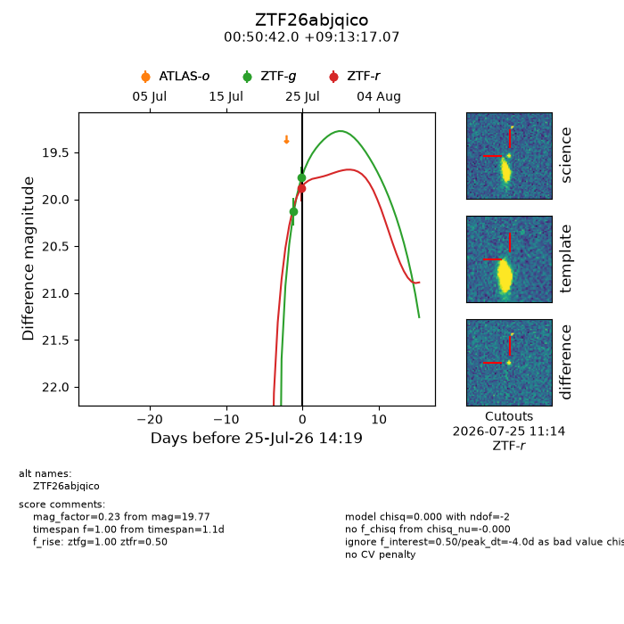
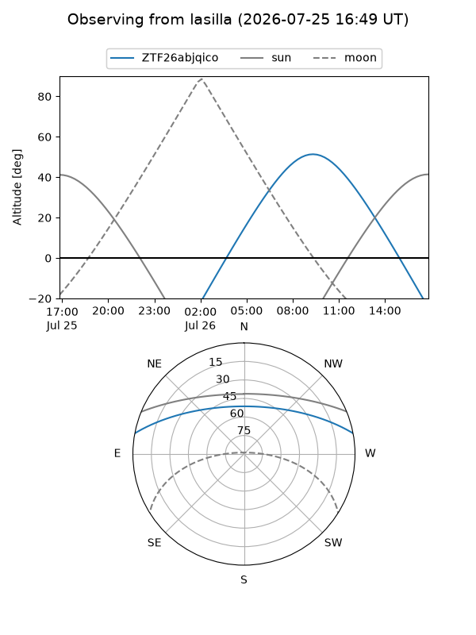
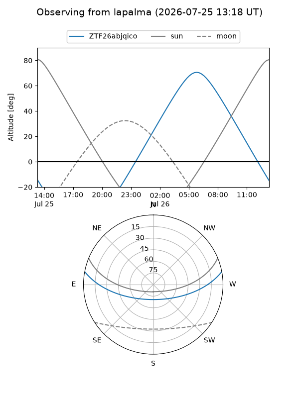
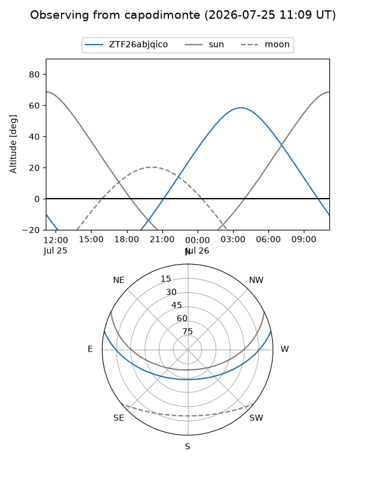
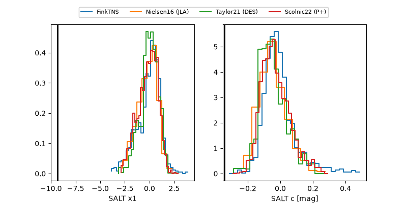

ZTF26abjqico
Target ZTF26abjqico at 2026-07-25 14:21
Aliases and brokers:
FINK-ZTF: ztf.fink-portal.org/ZTF26abjqico
Lasair-ZTF: lasair-ztf.lsst.ac.uk/objects/ZTF26abjqico
ALeRCE-ZTF: alerce.online/object/ZTF26abjqico
Direct TNS query: direct search
alt names
ZTF26abjqico (ztf,fink_ztf)
Coordinates:
equatorial (ra, dec) = 12.6749,+9.22141
equatorial (HMS+DMS) = 00:50:41.98,+09:13:17.07
galactic (l, b) = (122.6245,-53.64990)
Flags:
peak dt: -4.0
Photometry:
last ztfg=19.77, ztfr=19.88
2 ztfg, 1 ztfr detections
Lightcurve

Visibility



Additional plots
